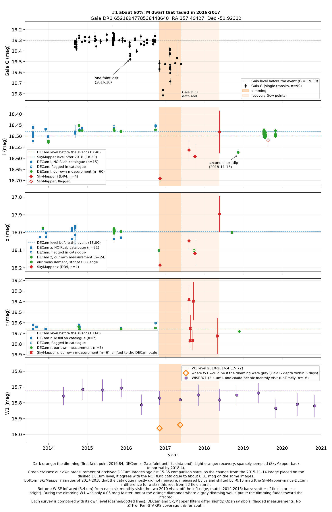
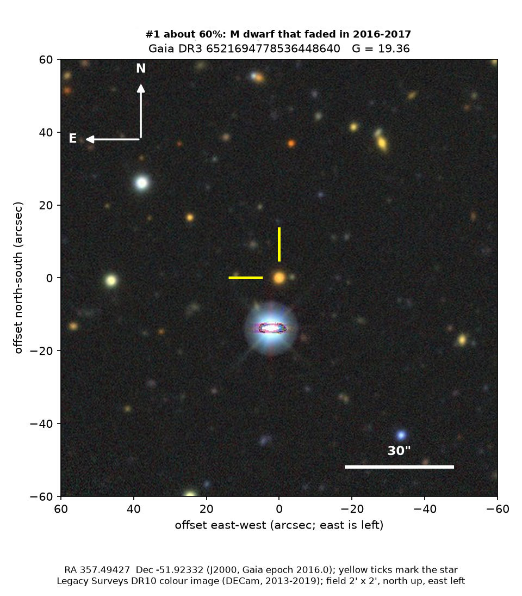
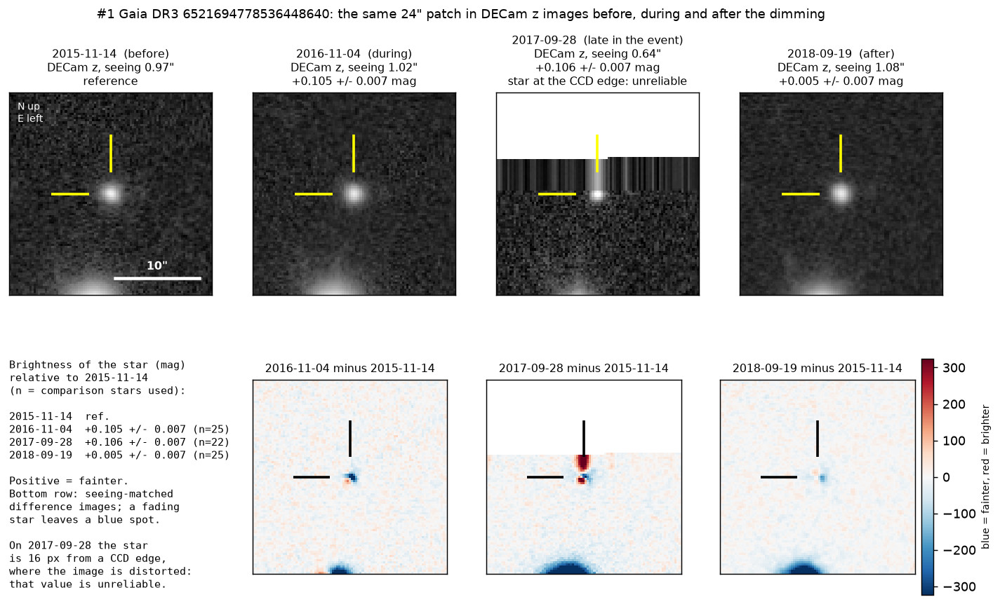
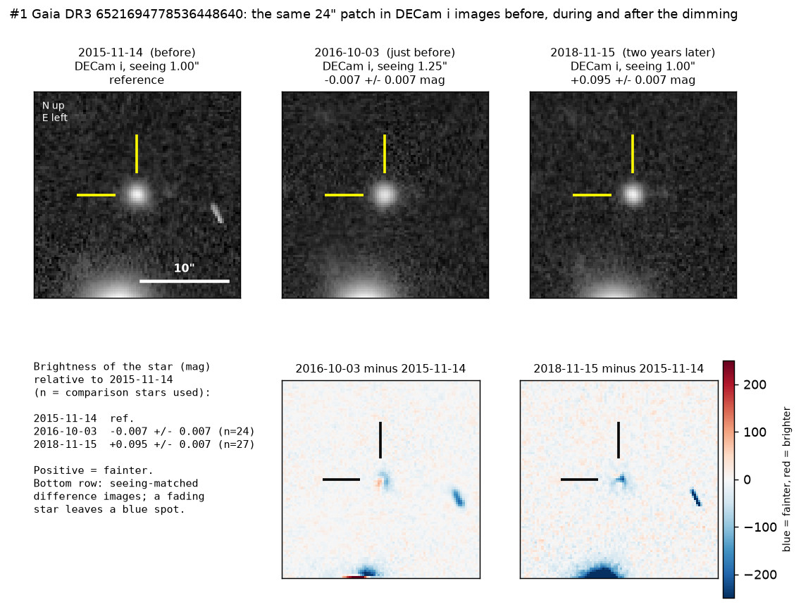

Professor of Mathematics
Paata Ivanisvili
Department of Mathematics, University of California, Irvine

Candidate 1: a red dwarf that faded for about a year
Why this estimate. The fading itself is certainly real: Gaia, the Dark Energy Camera and SkyMapper all recorded it. Without a spectrum of the star, though, its cause remains open. The grey colour of the fading argues only weakly against starspots, and only the way the star moves argues that it is not a young star with a dusty disc.
How to read the pictures. The finder chart shows a patch of sky two arcminutes across, about a fifteenth of the Moon’s width, with north up and east to the left. The star sits between the two yellow ticks, and the white bar is 30 arcseconds long. On a light curve the vertical axis is magnitude, a brightness scale on which larger numbers mean fainter stars, and it is drawn so that down means fainter. Orange shading marks the change. Each survey uses slightly different filters, so each is compared with its own normal level. The last two figures include difference images, in which one picture of the sky is subtracted from another; a blue spot means the star was fainter than in the comparison picture.

What changed. The star is a cool red dwarf in the southern constellation Phoenix, smaller and cooler than the Sun and far too faint to see by eye. Gaia measured it 99 times between 2014 and May 2017. It was steady until late 2016, apart from one slightly faint visit in February 2016. From November 2016 until Gaia’s published measurements end, in May 2017, it was 0.1 to 0.5 magnitudes fainter than normal, which means 7 to 38 per cent less light, and the depth could change by up to 0.2 magnitudes within two or three days.
Two other telescopes saw the same fading. On 4 November 2016 the Dark Energy Camera in Chile recorded the star 0.105 ± 0.007 magnitudes fainter in its z filter, and 0.083 ± 0.015 magnitudes fainter in Y, than in earlier images (the number after ± is the uncertainty). An image from 3 October 2016 was normal, so the fading began within those four weeks. On 13 November 2016 SkyMapper, in Australia, found the star about 0.2 magnitudes fainter than in its own later measurements.
The recovery was uneven. On 12 August 2017 SkyMapper had the star only 0.03 to 0.06 magnitudes faint, but on 7 October 2017 it was 0.1 to 0.15 magnitudes faint again, in two filters. A Dark Energy Camera z image from 28 September 2017 also shows it about 0.11 magnitudes faint, although the star falls at the edge of the detector there, so that value is less reliable. On its own, each of these 2017 points is only a weak measurement. The star was back to normal by May 2018 in SkyMapper and by September 2018 in the Dark Energy Camera, and a SkyMapper image from June 2021 is normal too.
The star was also measured afresh on 15 usable deep SkyMapper images. They include six r-filter images from August and September 2017 and May 2018, most of which the SkyMapper catalogue had not measured. In SkyMapper’s blurrier images the light of its bright companion star spills onto it, so that light is subtracted, using the light at the same distance from the companion in other directions. Where the catalogue also measured the star, the two sets of values agree to within 0.07 magnitudes. On average the new r points sit at the normal level, 0.04 ± 0.04 magnitudes fainter than expected from the Dark Energy Camera once the different filters are allowed for. They scatter more than their uncertainties, by about 0.4 magnitudes between nights 11 days apart. That could be flickering, but noise alone would produce as much scatter about once in 50 tries, so it does not count as significant.
There was also a second, shorter dip. A Dark Energy Camera image from 15 November 2018 shows the star 0.095 ± 0.007 magnitudes faint in the i filter, and the archive catalogue gives 0.093 for the same image. The value holds up whatever the size of the measuring window (0.089 to 0.099 across six sizes), and there are no bad pixels near the star. Twelve days later the star was nearly normal: 0.02 ± 0.01 magnitudes faint in r and 0.04 ± 0.03 in g. All 60 i-filter images from July, October and November 2019 are within 0.03 magnitudes of normal. Because this second dip rests on a single image, it is less certain than the main fading.
The colour of the fading is a clue. In Gaia the fading was about as deep in the red band as in the broad band (a ratio of 1.09 ± 0.11, where fine interstellar dust would give about 0.83). SkyMapper’s near-infrared z filter, at 0.9 microns, showed about the same 0.2 magnitudes as Gaia and SkyMapper’s i filter, in measurements a few days apart. From blue light to the near infrared, then, the fading was roughly grey. The preference for grey over fine dust is only a hint, at about 2.4 times the uncertainty, not a proof.
In the infrared the fading was much weaker. WISE measured the star at 3.4 microns twice during the fading, on 3 to 10 November 2016 and on 20 to 27 May 2017, using the combined image of each visit. Both times the star was only 0.05 ± 0.05 magnitudes fainter than in 2010 to 2016, while in visible and near-infrared light it was about 0.2 magnitudes fainter. A grey fade would have shown about 0.2 magnitudes in WISE too, and that is ruled out at about three times the uncertainty. An opaque body covering part of the star would dim every colour equally, so the result points instead to a thin veil of dust. A standard light-scattering calculation puts the grains at a few tenths of a micron across, about 0.2 to 0.5 microns: bigger than most interstellar grains, which would redden the light, but small enough to let 3.4-micron light through. Grains of a micron or more would dim the infrared at least as much as visible light. A similar pattern, nearly the same in visible colours and weaker at 3.6 to 4.5 microns, was found in the slow fading of Boyajian’s star and attributed to dust (Meng et al. 2017). The comparison is of colours only: Boyajian’s star is hotter, and its slow fading was a few per cent, not 20 per cent.
Why it might matter. Red dwarfs do flare, brightening briefly, and they do have starspots, which cause small, regular wiggles in brightness. They do not normally fade by up to a third for a year. A long fading is usually caused by dust passing in front of the star, for example a dusty disc around an unseen companion. Young stars often do this, but this one is probably old: the system lies about 580 parsecs below the plane of the Milky Way, where young stars are rare, and it moves like an ordinary older disc star. Old red dwarfs are not expected to have dusty discs, and that is what makes the event unusual.
The red dwarf also appears to have a companion. A Sun-like star 14 arcseconds to the south, the bright star below the target on the finder chart, is at the same distance (parallaxes of 1.53 and 1.60 milliarcseconds) and moves the same way across the sky (the motions differ by 0.5 ± 0.2 milliarcseconds per year). It is about 175 times brighter, at Gaia G = 13.7. An unrelated star this close and this similar would turn up by chance only about once in a thousand fields like this one. Gaia’s own analysis gives it a temperature of about 5,800 K, like the Sun, perhaps somewhat fewer heavy elements than the Sun (this is uncertain), and a speed along the line of sight of 13.4 ± 2.5 km/s. The two stars are at least 9,200 AU apart, about 300 times the Sun–Neptune distance. The pairing rests on statistics: there is no line-of-sight speed for the red dwarf to compare.
SIMBAD, VSX (the variable-star index) and the Gaia alerts list show nothing known about the star apart from an entry derived from Gaia. Gaia’s indicators of instrumental artefacts are normal, and other stars nearby did not fade on the same dates. Infrared colours from 2MASS, VHS and WISE are normal for a red dwarf, with no sign of warm dust, although cold or faint dust would not show. About 110 archived Dark Energy Camera images in five filters and 15 SkyMapper images were measured afresh, and 16 WISE visits from 2010 to 2020 were checked against hundreds of field stars of the same brightness. GALEX, in the ultraviolet, and eROSITA, in X-rays, do not detect the star, which is expected at this distance and says nothing either way.
- Star
- Gaia DR3 6521694778536448640, a cool red dwarf (an M dwarf)
- Location
- RA 357.49427°, Dec −51.92332° (J2000), in Phoenix
- Distance
- about 650 parsecs (2,100 light-years)
- Brightness
- Gaia G = 19.3, far too faint for the eye or a small telescope
- Probability
- This candidate is unconfirmed. The percentage under the title is an estimate of the chance that it is a real, previously unrecorded case of the kind described. The estimate has not been checked by outside experts. See the introduction to all twelve candidates.
- Caveat
- The main event is sparsely sampled, with about 30 measurements from three telescopes, and its depth varies from date to date. There is no spectrum. The 2018 dip rests on one image, and the autumn 2017 dip on three marginal measurements. No matching line-of-sight speed for the red dwarf confirms the companion. The infrared test assumes that the depth in visible light during each WISE visit matched the measurements just before and after it, but the depth could change by 0.2 magnitudes within days. WISE also reads the star about 0.1 magnitudes faint in 2019 and 2020, when the Dark Energy Camera saw it at its normal level. Each of those points is less than twice its uncertainty, so they are not taken as fading.


